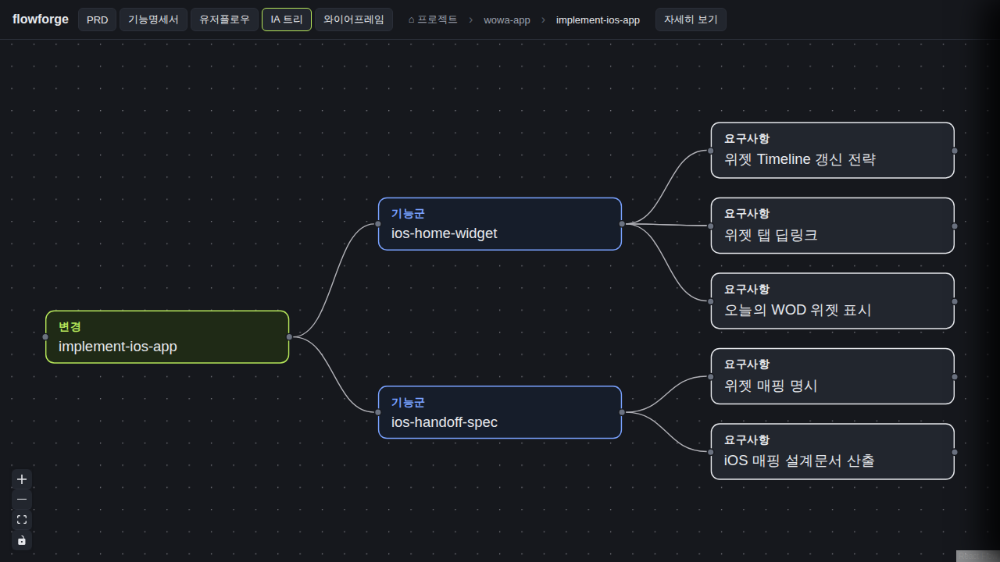

검증일: 2026-07-07T23:32:16+09:00 · 환경: server(적용: jest 통합/단위 실행), web(적용: 프로덕션 dist 정적서빙 + 실브라우저 gstack), android(SKIPPED 적용불가: android/·app/ 없음), ios(SKIPPED: macOS 필요 + ios/ 없음) · run: run-20260707-2332
PASS 5 · FAIL 0 · 검증 안 함 0 · SKIPPED 0
| Requirement | Scenario | Layer | 검증 수단 | 탐지 근거(basis) | 결과 | 증거 |
|---|---|---|---|---|---|---|
| change 5종 뷰는 프로젝트 컨텍스트로 해석된다 (server) | 타 프로젝트 change 뷰가 열린다: ?project=로 graph 요청 → 그 프로젝트 openspec/changes 해석 200 | server | 라우트 통합 테스트(graphCrossProject.test.ts) + 실서버 API 실측(5종 뷰 + 다른 프로젝트 ssoksok 200) | npm test 346/346 PASS · node fetch /api/changes/impl-ios-app/{graph,ia,wireframe,prd,spec-tree}?project=wowa-app = 200×5, feature-b?project=ssoksok=200 | ✓ PASS | 200 S1 graph/ia/wireframe/prd/spec-tree ?project=wowa-app (전부 200); graph nodes:1 edges:1 · prd sections:5 · spec-tree root:impl-ios-app (빈 200 아님) |
| change 5종 뷰는 프로젝트 컨텍스트로 해석된다 (server) | project 부재 = 기존 동작 불변: ?project= 없이 기존 URL → 현행 글로벌 루트 동작 그대로 | server | 통합 테스트(글로벌 change 200 / 프로젝트-only change는 글로벌에 없어 404) + 실서버 실측 | node fetch: impl-ios-app(글로벌 미존재)=404, cross-project-change-views(글로벌 존재)=200; 실브라우저 no-project global graph/prd=200 | ✓ PASS | 404 S2 no-project global-miss · 200 S2 global-hit · 실브라우저 no-project global: 200 (graph·prd) |
| change 5종 뷰는 프로젝트 컨텍스트로 해석된다 (server) | 경로 조작은 차단된다: project=../.. 또는 미지 프로젝트 → 404, 루트 밖 접근 없음 | server | 단위 테스트(resolveChangeDir '..' 차단·cross-root 누출 차단) + 통합 테스트 + 실서버 실측 | changes.test.ts '..'→null · graphCrossProject.test.ts traversal 404 · 실측: ../.. =404, no-such-project=404, feature-b via wowa-app(누출)=404 | ✓ PASS | 404 S3 traversal ../.. · 404 S3 unknown project · 404 S3 leak feature-b via wowa-app (cross-root 누출 차단) |
| web은 change 진입 컨텍스트를 뷰 호출에 전달한다 (web) | 카드 경유 change 클릭 → 5종 뷰 로드: wowa-app 카드에서 change 클릭 → 5종 뷰가 404 없이 그 프로젝트 산출물로 렌더 | web | 실브라우저(gstack) — 카드→capability→change 클릭, 네트워크 로그 + 렌더 스크린샷 | gstack: wowa-app 카드→scr-capture→impl-ios-app 클릭 시 5종 fetch 모두 ?project=wowa-app 부착 200×5, /api/changes/* 4xx 0건; PRD·IA 뷰 실렌더(브레드크럼 wowa-app) | ✓ PASS |  |
| web은 change 진입 컨텍스트를 뷰 호출에 전달한다 (web) | 읽기전용 프로젝트의 배치 저장은 무해 실패: RO 마운트에서 드래그 저장 실패 → 상태바 안내만, 뷰·문서·데이터 불변 | web | 서버 RO PUT 실측(500) + overlay 데이터 불변 실측 + web catch→setStatus 배선 정적 확인 | chmod 555 change dir 후 layout PUT=500(앱 컨텍스트 fetch 포함), overlay x:5,y:7 불변(99·777 반영 안 됨), 뷰 계속 200; App.tsx saveLayout(...).catch(e=>setStatus('읽기전용...')) 정적확인 | ✓ PASS | RO PUT status: 500 · overlay 불변 {x:5,y:7} · view after RO fail graph: 200 · web 배선: saveLayout non-ok throw → catch setStatus. (react-flow 실드래그는 gstack 도구 제약으로 상태바 텍스트 실렌더는 미관찰 — API 실패·데이터 불변·배선은 실측/정적 확인) |
| Requirement | null | 빈값 | 잘못된타입 | 경계값 | 에러경로 | 동시성 | 대량 | 특수문자 | 판정 |
|---|---|---|---|---|---|---|---|---|---|
| change 5종 뷰는 프로젝트 컨텍스트로 해석된다 (server) | ✓ | ✓ | ✓ | N/A | ✓ | N/A | N/A | ✓ | ✓ 충분 |
| web은 change 진입 컨텍스트를 뷰 호출에 전달한다 (web) | ✓ | N/A | N/A | N/A | ✓ | ✓ | N/A | ✓ | ✓ 충분 |
✓=covered · N/A=해당없음(사유 hover) · ✗=missing. happy-path만이면 검증 불충분 → 최종 FAIL 차단.
| Layer | 상태 | ran | passed | failed | 근거/사유 |
|---|---|---|---|---|---|
| server | ✓ PASS | 346 | 346 | 0 | npm test — 32 스위트 346/346 PASS(기존 336 회귀 0 + 크로스프로젝트 신규). graphCrossProject.test.ts·changes.test.ts 포함. 빌드 shared/server/web tsc EXIT 0 |
| web | ✓ PASS | 2 | 2 | 0 | 프로덕션 vite 빌드 dist를 Express 정적서빙 + gstack 실브라우저. 카드→capability→change→5종 뷰 렌더(?project= 200×5, /api/changes/* 4xx 0), RO 저장 500 무해+데이터 불변 |
| android | – SKIPPED | 0 | 0 | 0 | 적용 불가: 이 change는 server+web 전용, 안드로이드 산출물 없음 |
| ios | – SKIPPED | 0 | 0 | 0 | macOS 필요 + iOS 산출물 없음(Linux 플랫폼) |
✓ PASS 통과
archiveGate.open = true (PASS일 때만 true). verify.json이 이 값을 archive 게이트에 전달.
{kind=link}